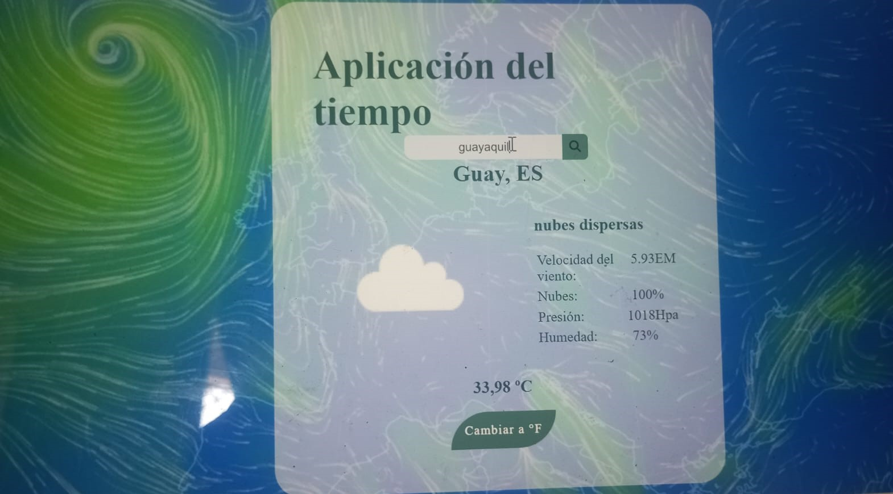
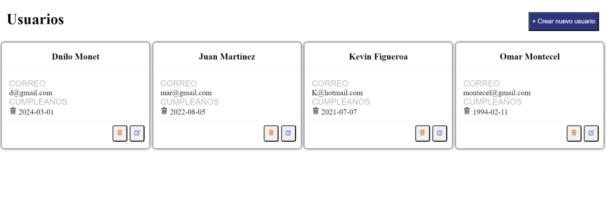
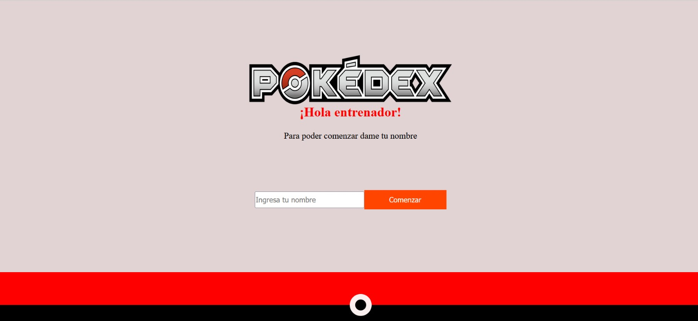

Fortune cookie
Aplicación web que nos permite ver de manera aleatorias diferentes imagenes al presionar el boton
Tech:HTML, CSS, REACT.JS
Weather App
Aplicación para concer el clima en cuakquier parte del mundo
Tech:HTML, CSS, REACT.JS
Rick and Morty
La aplicación de "Rick y Morty" es principalmente para entretener y proporcionar contenido de visualizacion a los fanáticos de la serie.
Tech:HTML, CSS, REACT.JS
Crud User
Esta aplicación consta para insertar datos y a su vez se puede editar como eliminar los datos en la api que nos proporciono el backend
Tech:HTML, CSS, REACT.JS
Pokemon
Aplicación sobre pokemon en el cual se puede ver información sobre los distintos pokemon.
Tech:HTML, CSS, REACT.JS